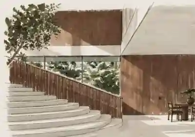

✦ A PERSONAL FOCUS ROOM EST. IN STILLNESS

I. A QUIETER PLACEAN INTERLUDE FOR YOUR MIND01 / 01
YOUR ROOM / 01
Make room
for focus.
One thing at a time.
25:00
READY WHEN YOU ARE
00SESSIONS TODAY
00MINUTES TODAY
YOUR LITTLE LIST ↘
SAVED ONLY IN THIS BROWSER. NO ACCOUNTS. NO DISTRACTIONS.